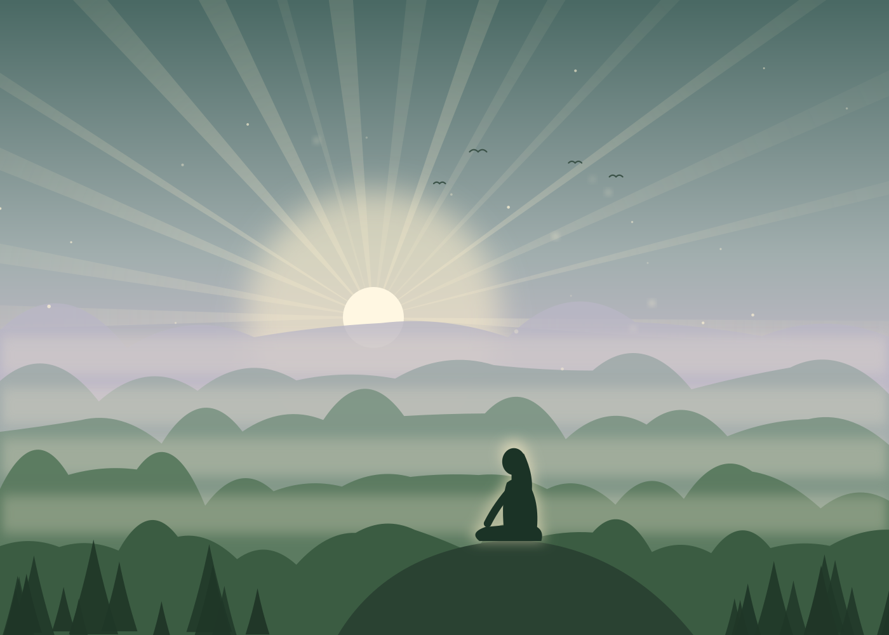
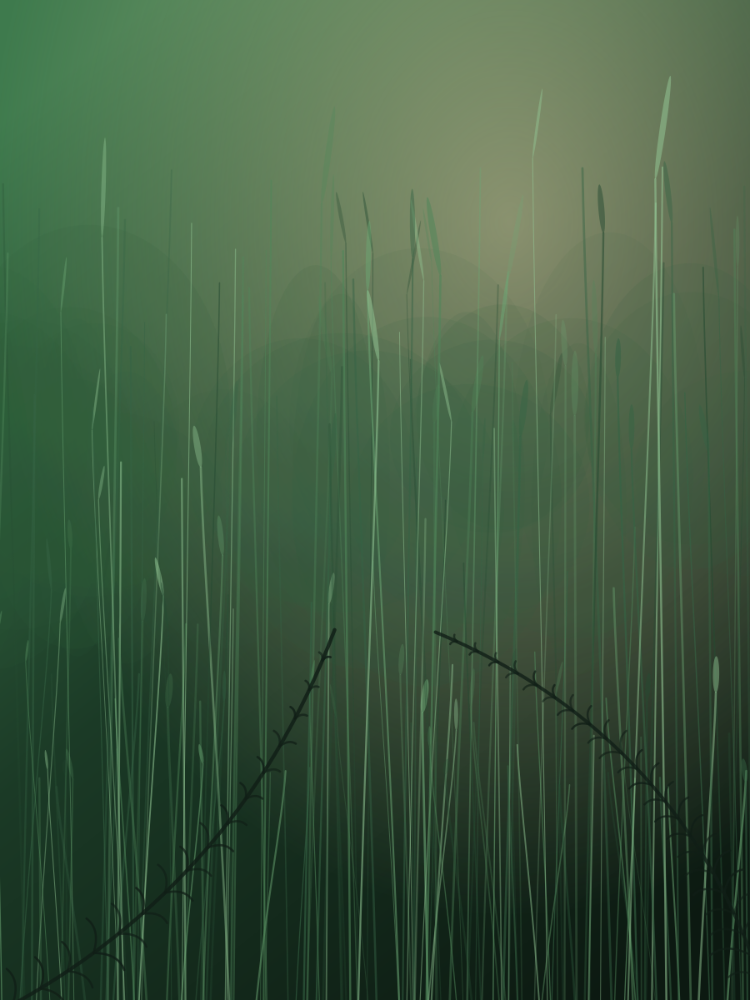
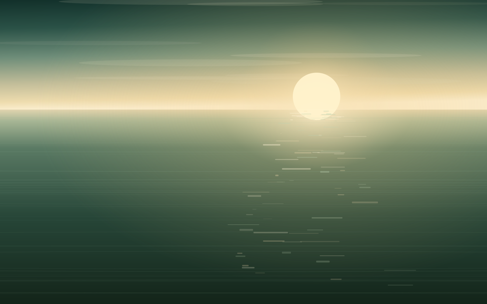
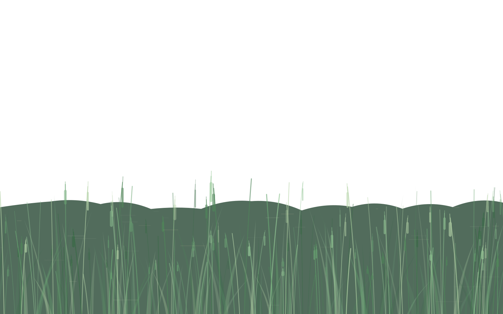

Mi formación
Mi camino hasta la Biodecodificación.
Cómo llegué, qué fui aprendiendo y desde dónde acompaño hoy.

De dónde viene mi mirada
Acompañar procesos también es aprender a escuchar lo invisible.
Siempre fui una persona curiosa, me gusta investigar, y en mi camino iba haciéndome preguntas:
- ¿Qué me está contando esta tensión?
- ¿Por qué duele en ese lugar y no en otro?
- ¿Qué quedó anudado en esa contractura?
Así fui buscando respuestas, y cada una me llevó a un nuevo aprendizaje, en el cual continúo.
Un camino de aprendizaje
No es una lista de títulos: son las puertas que se fueron abriendo y lo que cada una sumó a mi forma de acompañar.
-
La energía
Aprender a percibir lo que no se ve
Con la sanación energética, en la Escuela de Barbara Brennan, empecé a escuchar el cuerpo como un campo vivo, donde lo que sentimos también deja huella.
-
El síntoma con sentido
Entender lo que el cuerpo dice
La Biodecodificación, que estudié en Humano Puente, y la formación en las 5 Leyes Biológicas con Bodhi Medicine me dieron un mapa para leer el síntoma como un mensaje y no como un error a eliminar.
-
El cuerpo presente
Volver a habitar el cuerpo
Respiración y Trauma, con Heart Breath Method, la eutonía y el mindfulness me enseñaron a bajar el ritmo, a respirar y a acompañar desde la presencia, sin apurar lo que cada proceso necesita.
-
La ronda y la palabra
Poner en palabras, en compañía
Durante veinte años integré un grupo de mujeres que trabaja con «Mujeres que corren con los lobos», en la Fundación Creavida. Y ahí aprendí la fuerza de conectar con mi esencia y lo poderoso que es compartir con otras mujeres. La escritura psicosomática con Sofía Villalonga abrió otra vía para que lo de adentro encuentre forma.
-
Hoy
Sigo aprendiendo
Actualmente estoy tomando clases de Bioenergética. El camino sigue: cada puerta nueva se suma a las anteriores.
Cómo acompaño
Acompaño procesos de crecimiento y transformación desde la mirada de la Biodecodificación: en sesiones individuales, presenciales o virtuales; en el Círculo de Mujeres, donde trabajamos con «Mujeres que corren con los lobos»; en los programas Volver a Vos, y en retiros de mar y de montaña.
El Círculo de Mujeres, Espacio de Reconexión e Hilos invisibles los coordino en conjunto con Estela Fitere.


Volver a vos es el camino más verdadero.
Cuando quieras empezar, estoy de este lado.